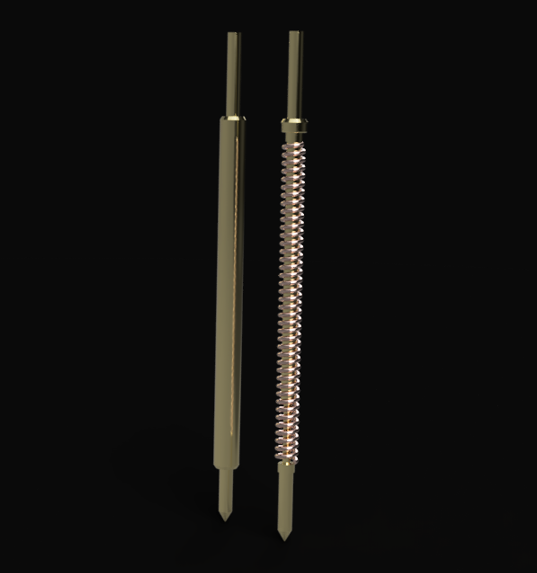
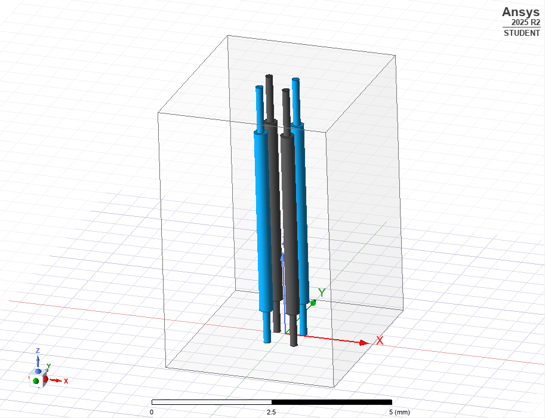
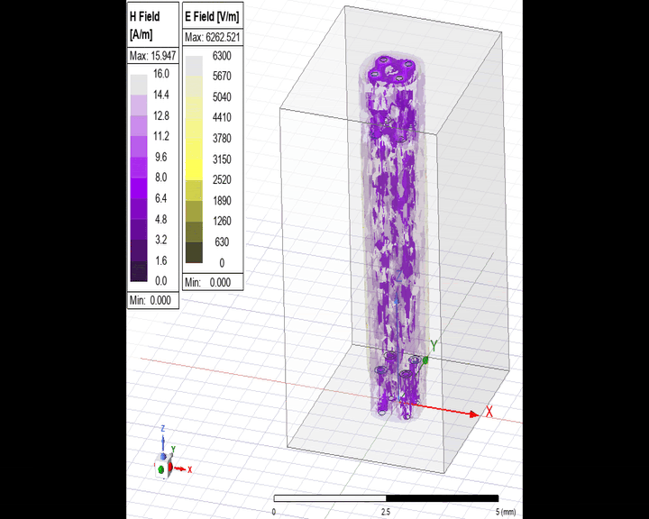
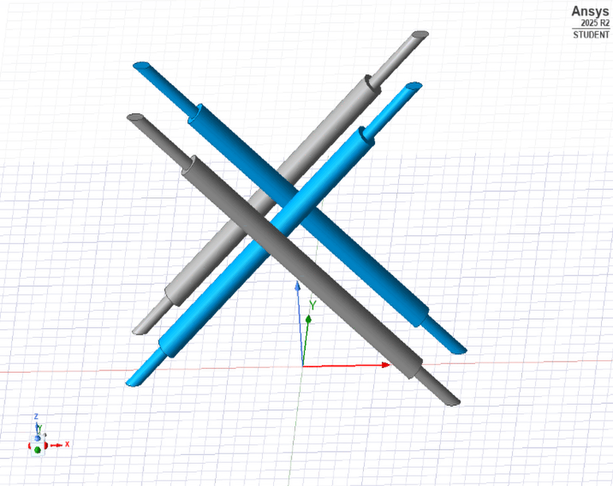

Working with Dr. Pooya Tadayon on the design of pogo pins for next generation socketing systems. The model on the left shows the external geometry of the pogo pin, while the model on the right shows the internal geometry.

Working with Dr. Pooya Tadayon on the design of pogo pins for next generation socketing systems. The model on the left shows the external geometry of the pogo pin, while the model on the right shows the internal geometry.

Intial Ansys HFSS Simulation are being performed on a 2x2 pin array. With the current compute limitations, abstract models are being tested to collect baseline data.

Ansys HFSS Electromagnetic Simulation of the 2x2 Pin Array at 6GHz.

Vertical pins were compared with a 45 degree offset variation. Resulting Far End Crosstalk (FEXT) and Near End Crosstalk (NEXT) frequency sweeps are shown. The 45 degree offset demonstrates better crosstalk performance compared to vertical setup.